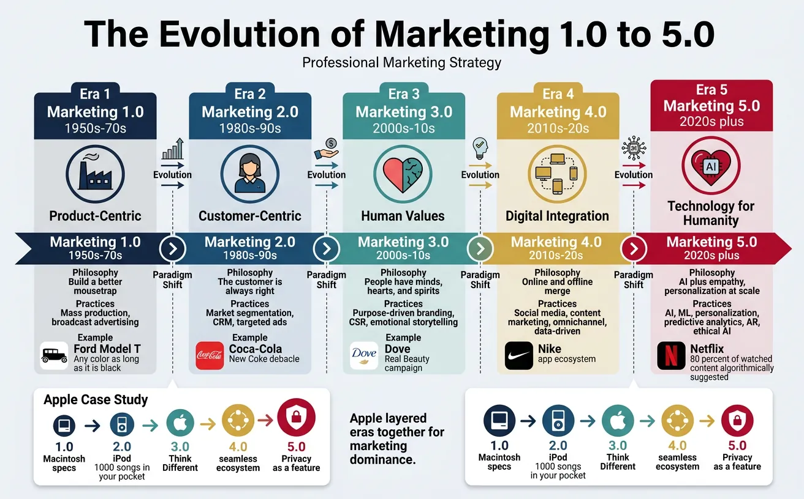
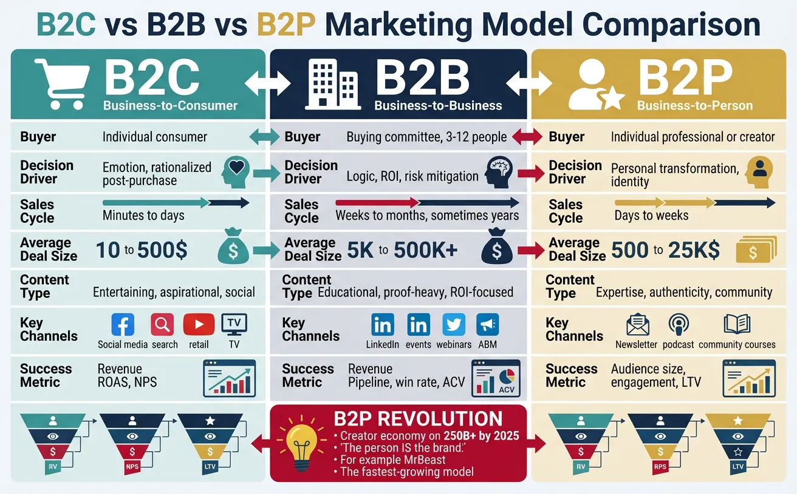
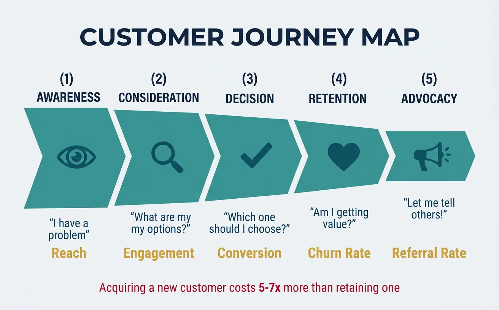
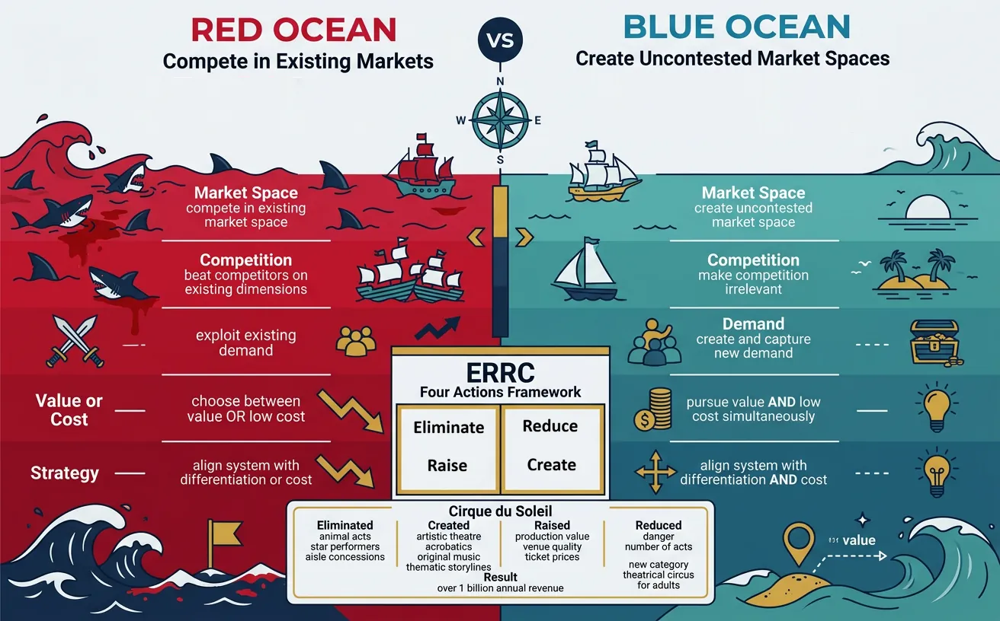
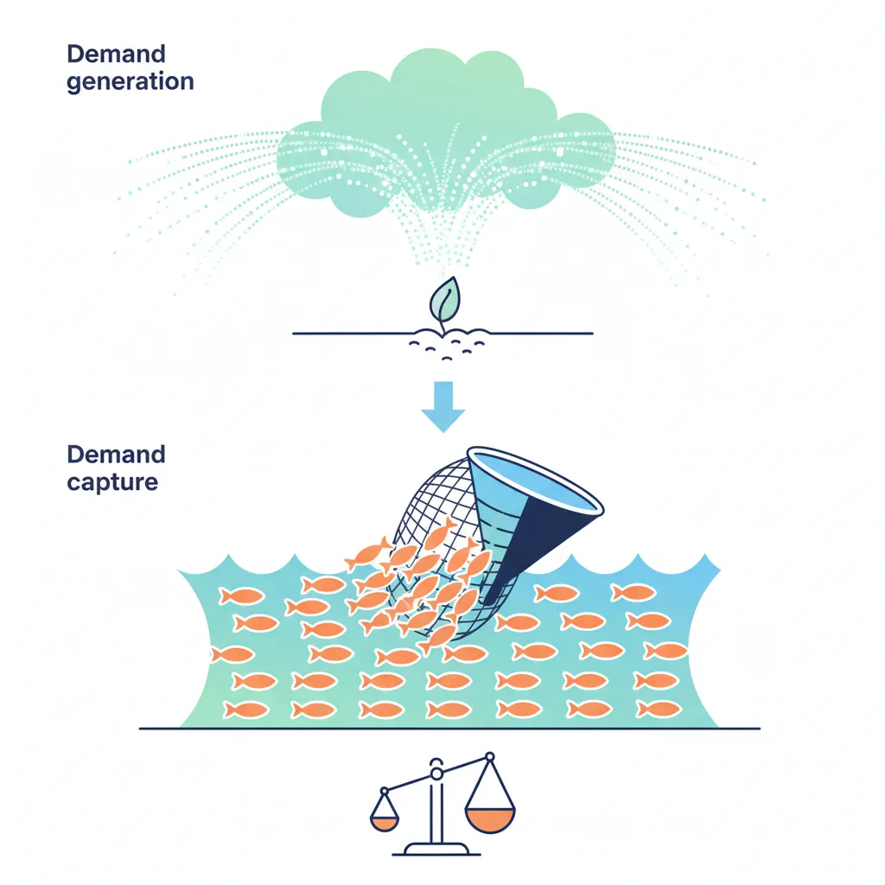

We use cookies to enhance your browsing experience, serve personalized content, and analyze our traffic.
By clicking "Accept All", you consent to our use of cookies. See our
Privacy Policy
for more information.
Marketing & Strategy Series Part 1: Marketing Fundamentals & Strategic Foundations
February 12, 2026Wasil Zafar25 min read
Master modern marketing and strategic thinking across B2C, B2B, B2P, startups, enterprises, and personal brands. Learn the evolution of marketing, STP model, 4Ps/7Ps, product-market fit, and strategic positioning.
Series Overview: This is Part 1 of our 21-part Marketing & Strategy Mastery Series. We'll cover everything from fundamental concepts to advanced strategies, spanning B2C, B2B, B2P, startups, enterprises, and personal brands—giving you the knowledge to master modern marketing and strategic thinking.
Marketing is fundamentally about creating and delivering value to customers while building sustainable competitive advantage. It's the bridge between what a business offers and what customers need—orchestrating every touchpoint from awareness to advocacy.
Key Insight: Marketing isn't about manipulation or "convincing" people to buy—it's about understanding customer needs deeply and creating genuine value that resonates. The best marketing doesn't feel like marketing at all.
In this comprehensive guide, we'll explore the foundational concepts that underpin all modern marketing strategy. By the end of this series, you'll have the knowledge to craft strategies for startups, enterprises, personal brands, and everything in between.
Think of marketing like water flowing through a landscape. A river doesn't force its way through rocks—it finds natural paths, adapts to terrain, and grows more powerful as tributaries join. Great marketing works the same way: it finds where customer needs flow naturally, channels value along those paths, and compounds over time.

The evolution of marketing paradigms from product-centric (1.0) to human-centric (5.0), reflecting shifts in technology and consumer expectations
Evolution of Marketing (1.0 → 5.0)
Marketing has evolved through five distinct paradigms, each reflecting fundamental shifts in technology, society, and consumer expectations. Understanding this evolution is crucial because many businesses unknowingly operate with outdated marketing philosophies.
Era
Focus
Core Philosophy
Key Practices
Era Example
Marketing 1.0 (1950s–70s)
Product
"Build a better mousetrap and the world will beat a path to your door"
Mass production, feature selling, broadcast advertising
4.0 (Digital): Apple ecosystem—seamless cross-device experience
5.0 (Tech + Human): Privacy as a feature—"What happens on your iPhone stays on your iPhone"
Key Lesson: Apple didn't abandon previous eras—it layered them. Great products + customer empathy + brand values + digital integration + ethical tech = marketing dominance.
Market vs Industry vs Category
These three terms are often used interchangeably but mean fundamentally different things. Confusing them leads to poor strategic decisions.
Definitions:
Market: A group of potential buyers with a shared need. Defined by demand. Example: "People who need to get from A to B" (transportation market).
Industry: A group of companies that produce similar products/services. Defined by supply. Example: "Automobile manufacturers" (auto industry).
Category: A competitive frame of reference as perceived by buyers. Defined by perception. Example: "Electric SUVs" (a category within the auto industry).
Why this matters strategically: Tesla initially entered the auto industry, but they redefined the category from "electric cars" to "sustainable energy vehicles." Their market isn't just car buyers—it's anyone who wants sustainable transportation (including solar and battery storage customers). By thinking in terms of markets rather than industries, Tesla found adjacent opportunities that traditional automakers missed.
Strategic Implication: When you define your business by industry ("we're a taxi company"), you compete on existing terms. When you define it by market ("we help people move efficiently"), you can disrupt the entire landscape—which is exactly what Uber did.
Business Model Differences
B2C vs B2B vs B2P
The way you market depends fundamentally on who you're selling to. The three primary models—B2C, B2B, and B2P—each have distinct buyer psychology, sales cycles, and strategy requirements.

Key differences between B2C, B2B, and B2P marketing models across buyer psychology, sales cycles, and strategy requirements
Dimension
B2C (Business-to-Consumer)
B2B (Business-to-Business)
B2P (Business-to-Person/Creator)
Buyer
Individual consumer
Buying committee (3-12 people)
Individual professional or creator
Decision Driver
Emotion → rationalized post-purchase
Logic, ROI, risk mitigation
Personal transformation, identity
Sales Cycle
Minutes to days
Weeks to months (sometimes years)
Days to weeks
Average Deal Size
$10 – $500
$5K – $500K+
$500 – $25K
Content Type
Entertaining, aspirational, social
Educational, proof-heavy, ROI-focused
Expertise, authenticity, community
Key Channels
Social media, search, retail, TV
LinkedIn, events, webinars, ABM
Newsletter, podcast, community, courses
Success Metric
Revenue, ROAS, NPS
Pipeline, win rate, ACV
Audience size, engagement, LTV
The B2P Revolution: The rise of the creator economy has created a third model: B2P (Business-to-Person). Here, the person is the brand. Think of how MrBeast doesn't just sell products—he is the product. B2P marketing centers on personal authority, thought leadership, and community trust. It's the fastest-growing model, with the creator economy valued at $250B+ by 2025.
STP Model (Segmentation, Targeting, Positioning)
The STP model is the single most important strategic framework in marketing. It answers three questions every marketer must answer before spending a single dollar:
The Three Questions:
Segmentation: Who are the distinct groups of potential customers? (Divide the market)
Targeting: Which segment(s) should we focus on? (Choose your battles)
Positioning: How should we be perceived relative to alternatives? (Own a position)
Segmentation: The travel accommodation market was segmented by travelers who wanted (a) luxury hotels, (b) budget hotels, (c) authentic local experiences, and (d) extended stays.
Targeting: Airbnb targeted segment (c)—travelers who craved authentic, local experiences and were comfortable with peer-to-peer trust. This was an underserved segment ignored by hotels.
Positioning: "Belong anywhere." Instead of competing on price or amenities, Airbnb positioned on belonging—the emotional desire to feel like a local, not a tourist.
Result: From a $20B valuation at IPO to disrupting a $700B hotel industry—by owning a position none of the incumbents could credibly claim.
4Ps, 7Ps, and Modern Marketing Mix
The marketing mix is the set of tactical levers you control. Think of it as your mixing board in a recording studio—each fader adjusts a different element, and the magic is in the blend.
The Original 4Ps (McCarthy, 1960)
Product: What you sell. Features, quality, design, branding, packaging. The product must solve a real problem or fulfill a genuine desire.
Price: What customers pay. Pricing strategy, discounts, payment terms, perceived value. Price signals positioning—luxury or value?
Place: Where and how customers access the product. Distribution channels, availability, logistics. "Right product, right place, right time."
Promotion: How you communicate value. Advertising, PR, sales promotions, personal selling, digital marketing.
Extended to 7Ps (Booms & Bitner, 1981)
For services marketing, three additional Ps were added:
People: Everyone involved in delivering the service. Hiring, training, customer service quality. Zappos' legendary customer service team is their most powerful marketing asset.
Process: The systems and procedures for service delivery. Amazon's 1-click ordering removed friction from the buying process.
Physical Evidence: Tangible proof of service quality. Starbucks' store design, Apple Store's Genius Bar, branded packaging that creates an "unboxing" experience.
Customer Understanding
The foundation of all effective marketing is deep customer understanding. You can't create value if you don't know what people value. This section covers three frameworks that transform surface-level assumptions into genuine customer insight.

A customer journey map tracing every touchpoint from initial awareness through loyal advocacy
Customer Journey Mapping
A customer journey map traces every touchpoint from the moment someone becomes aware of a problem to the moment they become a loyal advocate. Think of it as GPS for your marketing—it shows where customers are, where they're going, and where they get lost along the way.
Stage
Customer Mindset
Marketing Goal
Key Tactics
Metrics
1. Awareness
"I have a problem/desire"
Be discovered
SEO, content marketing, social media, PR, thought leadership
Impressions, reach, brand awareness surveys
2. Consideration
"What are my options?"
Be preferred
Comparison content, case studies, webinars, email nurture
The Leaky Bucket Analogy: Most businesses spend 80% of their budget on Stage 1-3 (filling the bucket) and 20% on Stage 4-5 (plugging leaks). But acquiring a new customer costs 5-7x more than retaining an existing one. The smartest marketers flip this—they invest heavily in retention and advocacy, turning happy customers into their most effective acquisition channel.
Jobs-To-Be-Done Framework
Clayton Christensen's Jobs-To-Be-Done (JTBD) framework is a radical rethinking of why people buy things. Instead of asking "Who is our customer?" it asks "What job is the customer hiring our product to do?"
Christensen's Milkshake Example: McDonald's wanted to sell more milkshakes. Demographics told them nothing useful. But by observing when people bought milkshakes (mornings, alone, for a long commute), they discovered the "job": "I need something to make my boring 45-minute commute more interesting, keep me full until lunch, and fit in my car's cup holder." The competition wasn't other milkshakes—it was bananas, bagels, and boredom.
JTBD Job Statement Structure
A well-formed job statement follows this pattern:
When [situation], I want to [motivation], so I can [desired outcome].
Spotify: "When I'm working out, I want to hear energizing music that matches my pace, so I can maintain motivation and push through my workout."
Slack: "When I need a quick answer from a colleague, I want to message them without the formality of email, so I can get unblocked and keep working."
Airbnb: "When I'm traveling to a new city, I want to stay somewhere that feels like a local's home, so I can experience the culture authentically."
Case Study: Intercom's JTBD PivotB2B SaaS
Intercom, the customer messaging platform, used JTBD to discover that their customers weren't "hiring" Intercom for live chat (feature)—they were hiring it to "have personal conversations with the right people at the right time" (job).
This insight shifted their entire product and marketing strategy from competing on chat features to positioning around customer relationship management. They built onboarding tours, help articles, and proactive messages—all serving the same underlying job.
Result: Revenue grew from $50M to $200M+ as they expanded beyond their original "live chat" category by understanding the deeper job.
Product-Market Fit
Product-Market Fit (PMF) is the holy grail of startups and the single most important concept before scaling marketing investment. It means you've built something that a specific market genuinely wants—not just tolerates, but would be disappointed without.
The Sean Ellis Test: Survey your users: "How would you feel if you could no longer use [product]?" If 40%+ say "Very disappointed," you have product-market fit. Below 40%, you need to iterate.
Signs You Have PMF
Organic growth: Users refer others without being asked
Demand exceeds supply: You're struggling to keep up, not struggling to find customers
Usage depth: Users use the product in ways you didn't expect
Willingness to pay: Customers don't need convincing on price
Signs You Don't Have PMF
Customers churn after the trial/free period
Every sale requires heavy discounting or hand-holding
Your best channel is paid ads (no organic pull)
Support requests are about confusion, not enhancement
The sales team sells on features, not outcomes
Critical Warning: Scaling marketing spend before achieving PMF is the #1 cause of startup death. It's like pouring fuel on a car with no engine—you'll burn through cash without going anywhere. Get PMF first, then scale. Marc Andreessen calls PMF "the only thing that matters."
Strategic Positioning
Positioning is the art of designing your brand's offering so it occupies a distinct and valued place in the target customer's mind. It's not what you do to the product—it's what you do to the mind of the prospect.

Blue Ocean vs Red Ocean strategy — competing in existing markets versus creating uncontested market spaces
Blue Ocean vs Red Ocean Strategy
Developed by W. Chan Kim and Renée Mauborgne, this framework fundamentally changed how strategists think about competition.
Dimension
Red Ocean (Compete)
Blue Ocean (Create)
Market Space
Compete in existing market space
Create uncontested market space
Competition
Beat competitors on existing dimensions
Make competition irrelevant
Demand
Exploit existing demand
Create and capture new demand
Value/Cost
Choose between value OR low cost
Pursue value AND low cost simultaneously
Strategy
Align whole system with differentiation or cost
Align whole system with differentiation and cost
Case Study: Cirque du Soleil's Blue OceanEntertainment
The traditional circus industry (Ringling Bros.) was a red ocean: declining audiences, animal rights controversies, high costs for star performers and animals.
What Cirque du Soleil eliminated: Animal acts, star performers, aisle concessions, multiple show arenas
What they created: Artistic theatre + acrobatics, original music, thematic storylines, upscale experience
What they raised: Production value, venue quality, ticket prices
What they reduced: Danger/thrill (no animals), number of acts per show
Result: Revenue exceeding $1 billion annually, reaching an audience that would never attend a traditional circus. They didn't beat Ringling Bros.—they made them irrelevant by creating a new category: "theatrical circus for adults."
The Four Actions Framework (ERRC Grid)
To create a blue ocean, ask four questions about your industry's existing factors of competition:
Eliminate: Which factors that the industry takes for granted should be eliminated?
Reduce: Which factors should be reduced well below the industry standard?
Raise: Which factors should be raised well above the industry standard?
Create: Which factors should be created that the industry has never offered?
Competitive Positioning
Your positioning statement defines exactly where you sit in the customer's mental landscape. It's the foundation for all messaging, content, and brand expression.
Positioning Statement Template:
For [target customer] who [need/opportunity], [brand] is the [category] that [key benefit] because [reason to believe].
Classic Positioning Examples
Volvo: For safety-conscious families who want premium transportation, Volvo is the car brand that delivers the highest level of safety, because they've pioneered safety innovations for 60+ years (three-point seatbelt, side-impact protection, pedestrian detection).
Slack: For teams who are tired of email overload, Slack is the collaboration hub that makes work communication faster and more organized, because it centralizes conversations, files, and integrations in one searchable place.
Dollar Shave Club: For guys tired of overpaying for razor blades, Dollar Shave Club is the subscription service that delivers quality razors at a fraction of the price, because they cut out retail middlemen and sell direct.
The Three Types of Positioning
Category Leader: "We are THE solution" (Salesforce in CRM)
Challenger: "We're the better alternative" (HubSpot vs Salesforce—"powerful but easy")
Category Creator: "We invented a new space" (Drift created "Conversational Marketing")
Market Sizing (TAM, SAM, SOM)
Market sizing is essential for strategic planning, investor pitches, and resource allocation. It answers: "How big is the opportunity?"
The Three Circles:
TAM (Total Addressable Market): The total global revenue opportunity if you captured 100% of the market. The theoretical maximum. Example: "The global CRM market is $80 billion."
SAM (Serviceable Addressable Market): The portion of TAM you can actually service with your product, geography, and business model. Example: "The North American SMB CRM market is $12 billion."
SOM (Serviceable Obtainable Market): The realistic share you can capture in the near term (1-3 years). Example: "We can realistically capture $50 million of the SMB CRM market in 3 years."
Two Approaches to Market Sizing
Approach
Method
Best For
Example
Top-Down
Start with total market data → apply filters → estimate your share
Investor decks, sanity checks
Global fitness market ($100B) × US share (35%) × online segment (20%) × target demo (25%) = $1.75B SAM
Bottom-Up
Start with unit economics → multiply by reachable customers
Common Mistake: Investors see right through "our TAM is $50 billion" claims. They want to see a credible SOM with clear assumptions. A small slice of a big market is more convincing than claiming you'll dominate the whole thing. Show your bottom-up math.
Growth Strategy
Once you understand your market and have achieved product-market fit, the question becomes: How do we grow? This section covers the strategic frameworks that guide sustainable growth.

Demand generation creates new awareness while demand capture harvests existing intent — most businesses over-invest in capture
Demand Generation vs Demand Capture
One of the most important distinctions in marketing strategy is whether you're creating demand or capturing existing demand. Most businesses over-invest in capture and under-invest in generation.
Dimension
Demand Generation (Create)
Demand Capture (Harvest)
What it does
Creates awareness of a problem or possibility people didn't know they had
Captures intent from people already searching for a solution
Buyer state
Unaware or problem-aware
Solution-aware or product-aware
Tactics
Thought leadership, branded content, podcasts, events, community, PR
Google Ads, SEO, comparison pages, review sites, retargeting
Timeline
Long-term (months to years)
Short-term (days to weeks)
Measurement
Brand awareness, engagement, pipeline influence
Cost per lead, conversion rate, ROAS
Analogy
Planting seeds and nurturing a garden
Harvesting ripe fruit from someone else's garden
The 95-5 Rule: Research by the Ehrenberg-Bass Institute shows that at any given time, only about 5% of your total addressable market is actively "in-market" (ready to buy). The other 95% are future buyers. If you only do demand capture (targeting the 5%), you miss the massive opportunity to build brand preference with the 95% who will buy eventually.
Platform vs Marketplace Strategy
Understanding whether to build a platform or a marketplace is a critical strategic decision that shapes your entire marketing approach.
Characteristic
Platform
Marketplace
Definition
Foundation where others build products/services on top
Place where buyers and sellers find each other
Value Creation
Enables third-party innovation
Facilitates transactions
Revenue Model
Licensing, API fees, revenue share
Transaction fees, commissions, ads
Examples
iOS (Apple), AWS (Amazon), Shopify
eBay, Uber, Airbnb, Upwork
Marketing Challenge
Attract developers/builders
Solve chicken-and-egg (supply before demand)
Case Study: Uber's Chicken-and-Egg SolutionMarketplace
Uber faced the classic marketplace cold start problem: riders won't join without drivers, and drivers won't join without riders.
Their solution — supply-side seeding:
Guarantee driver earnings: Paid drivers $25-30/hour regardless of rides—reducing their risk to zero
Geo-fence launch: Launched city-by-city (San Francisco first), concentrating supply and demand
Event-based seeding: Offered free rides at tech conferences where early adopters gathered
Referral loops: $20 credit for both referrer and referee—creating viral growth
Lesson: In marketplace businesses, always seed the harder side first (usually supply), then use that supply to attract demand. Once both sides reach critical mass, network effects take over.
Network Effects & Flywheels
A network effect occurs when each additional user makes the product more valuable for all users. It's the most powerful competitive moat in business—and understanding it is essential for growth strategy.
Types of Network Effects
Direct (Same-Side): More users of the same type = more value. Example: WhatsApp—the more friends who use it, the more valuable it is to you.
Indirect (Cross-Side): More users on one side = more value for the other side. Example: More apps on iOS = more attractive for iPhone buyers.
Data Network Effects: More usage = better data = better product = more usage. Example: Google Search improves with every search query.
Platform Network Effects: More integrations/plugins = more capability = more users. Example: Salesforce AppExchange has 5,000+ apps, making switching nearly impossible.
Building a Business Flywheel
A flywheel is a self-reinforcing growth loop where each component feeds the next. Jeff Bezos famously drew Amazon's flywheel on a napkin:
Amazon's Flywheel: Lower prices → More customers → More sellers → More selection → Better customer experience → More customers → (Virtuous cycle powers lower cost structure → Even lower prices)
The key insight: flywheels are hard to start (enormous initial energy required) but nearly impossible to stop once spinning. Your marketing strategy should identify which actions create compounding returns—and invest disproportionately there.
Case Study: HubSpot's Content FlywheelB2B SaaS
HubSpot built one of the most successful content flywheels in B2B:
Email subscribers → nurtured via educational content → convert to free CRM users
Free CRM users → experience value → upgrade to paid products
Paid customers → create case studies + referrals → attract more organic traffic
Scale: HubSpot's blog generates 6M+ monthly visits, their free tools have 100,000+ users, and their content library is so dominant that "inbound marketing" (a term THEY coined) became an entire industry category. The flywheel now spins with minimal additional investment.
Marketing Strategy Canvas
Use this interactive canvas to build your foundational marketing strategy. Define your target market, positioning, and go-to-market approach, then export as Word, Excel, PDF, or PowerPoint.
Marketing Strategy Canvas
Fill in each field to build your marketing foundation. This canvas covers STP, positioning, and growth strategy essentials.
Draft auto-saved
All data stays in your browser. Nothing is sent to or stored on any server.
Exercises
Exercise 1: STP Analysis for Your Business45 minutes
Objective: Apply the STP framework to your own business or a business you admire.
List 5+ ways you could segment your total addressable market (use at least 3 different segmentation variables)
Evaluate each segment on: (a) size, (b) growth rate, (c) profitability, (d) accessibility, (e) competitive intensity
Select your primary target segment and justify why
Write a positioning statement using the template: For [target] who [need], [brand] is the [category] that [benefit] because [reason]
Identify 2-3 competitor positioning statements and map them on a perceptual map (two key axes)
Success Criteria: Your positioning should be distinct from all competitors on at least one dimension, and defensible based on your actual capabilities.
Exercise 2: Jobs-To-Be-Done Interviews60 minutes
Objective: Conduct 3 JTBD interviews to uncover true customer motivations.
Select 3 recent customers (or friends who made a significant purchase)
Interview them about a recent buying decision using the JTBD timeline:
First thought: "When did you first think about switching/buying?"
Event 1: "What triggered you to start looking?"
Event 2: "What alternatives did you consider? Why did you reject them?"
Purchase: "What made you finally decide?"
Consumption: "How are you using it? Is it what you expected?"
Write a job statement for each: "When [situation], I want to [motivation], so I can [outcome]"
Compare the 3 job statements—what patterns emerge?
Key Insight: You'll likely discover that the "job" is very different from what you assumed. The surface-level feature request almost always masks a deeper emotional or social job.
Exercise 3: Blue Ocean ERRC Grid30 minutes
Objective: Apply the Four Actions Framework to your industry.
List the 8-10 factors your industry competes on (e.g., price, features, speed, customer service, brand prestige)
For each factor, rate your industry's current investment level (1-10)
Apply the ERRC grid:
Eliminate: Which 2-3 factors could you drop entirely?
Reduce: Which 2-3 factors could you invest less in?
Raise: Which 2-3 factors should you dramatically increase?
Create: What 1-2 factors don't exist yet that you could introduce?
Draw your new "strategy canvas" (value curve) compared to the industry average
Goal: Your new curve should be dramatically different from the industry average—not slightly better on every dimension, but different in kind.
Key Takeaways
Marketing = Value Creation: Great marketing isn't about persuasion—it's about creating genuine value for a specific audience and communicating it effectively
Marketing Has Evolved: From product-centric (1.0) to technology-for-humanity (5.0)—layer the eras, don't abandon them
STP is Non-Negotiable: Every marketing strategy starts with Segmentation, Targeting, and Positioning. Skip this and everything downstream fails
Think in Jobs, Not Demographics: The JTBD framework reveals what customers truly need—the "job" they hire your product to do
PMF Before Scale: Scaling marketing without product-market fit is the fastest way to waste money. Get the 40%+ "very disappointed" threshold first
Blue Ocean > Red: Don't compete on existing terms—use the ERRC grid to create uncontested market space
Build Flywheels: Identify compounding growth loops where each action feeds the next. Flywheels beat campaigns every time
The 95-5 Rule: Only 5% of your market is in-market at any time. Invest in brand building with the other 95% for long-term dominance
Continue the Series
Part 2: Consumer & Buyer Psychology
Master behavioral economics, cognitive biases in marketing, trust-building mechanisms, and decision-making heuristics that drive purchases.